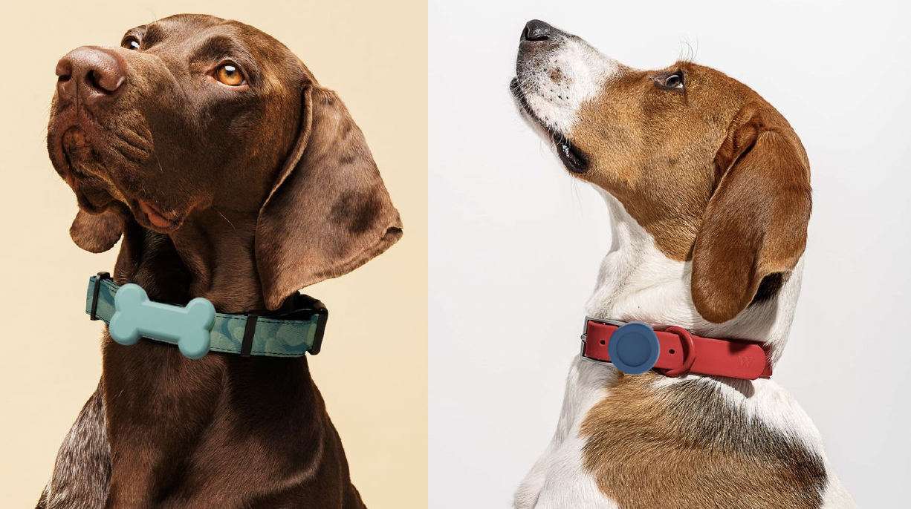
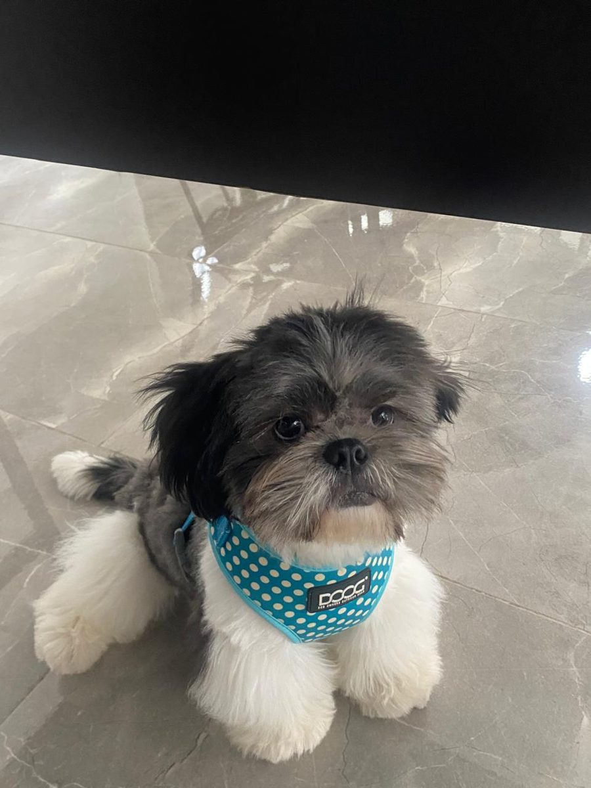

IDENTIFICACIÓN · COMUNIDAD · REENCUENTRO
Volver a casa empieza aquí.
TAGGY es una placa de identificación con NFC para el collar de tu mascota. Si tu mascota se pierde, quien la encuentre acerca su celular a la placa y llama a su dueño.
📲 Acerca tu celular a la placa y mira el perfil de la mascota

TAGGY
Una nueva forma de volver a casa.
IDENTIFICA ✦ REPORTA ✦ CONECTA ✦ VUELVE A CASA ✦IDENTIFICA ✦ REPORTA ✦ CONECTA ✦ VUELVE A CASA ✦IDENTIFICA ✦ REPORTA ✦ CONECTA ✦ VUELVE A CASA ✦IDENTIFICA ✦ REPORTA ✦ CONECTA ✦ VUELVE A CASA ✦IDENTIFICA ✦ REPORTA ✦ CONECTA ✦ VUELVE A CASA ✦IDENTIFICA ✦ REPORTA ✦ CONECTA ✦ VUELVE A CASA ✦IDENTIFICA ✦ REPORTA ✦ CONECTA ✦ VUELVE A CASA ✦IDENTIFICA ✦ REPORTA ✦ CONECTA ✦ VUELVE A CASA ✦
¿CÓMO FUNCIONA?
Simple para todos.
TAGGY conecta la placa de tu mascota con los datos de su dueño para facilitar su regreso.
🐾
Identifica
La placa TAGGY relaciona a la mascota con los datos de contacto de su dueño.
♡
Reporta
Si tu mascota se pierde, crea un reporte con su foto y una descripción de cómo es.
✦
Conecta
Los dueños, la comunidad y las veterinarias aliadas se ayudan a encontrarla.
NFC
Así se ve al acercar el celular.
- Quien encuentra a la mascota acerca su celular a la placa TAGGY del collar.
- Se abre el perfil de la mascota con su foto, sus datos básicos y sus alertas médicas.
- Con un toque llama al dueño o le escribe por WhatsApp.
🚨 ¡ESTOY PERDIDO!

Catalino 🐾
Raza: Shih Tzu
Edad: 1 año
TAGGY